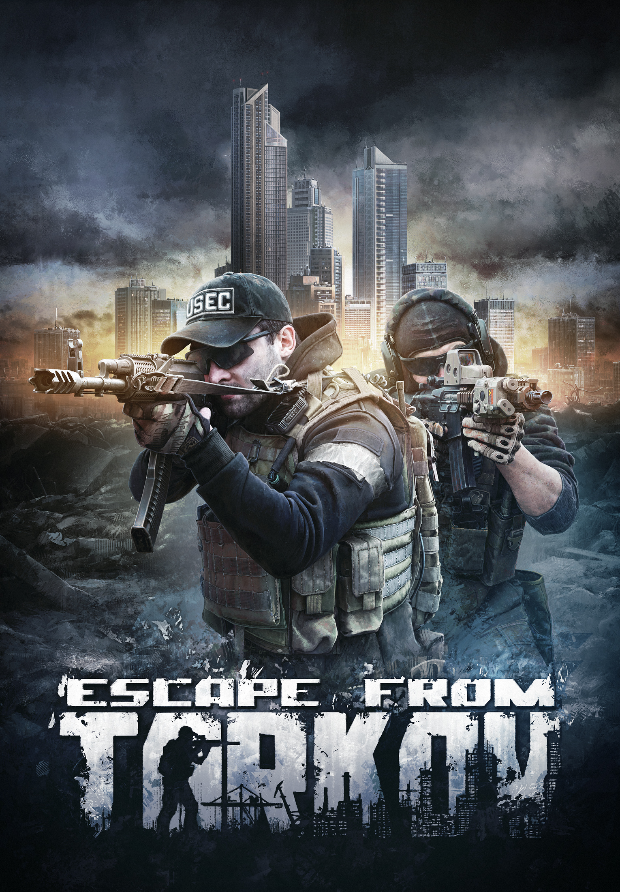
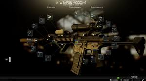

세상 어려운 FPS 게임

지금까지 이런 게임은 없었다
이런 게임을 왜 돈주고 하나 싶을 정도로 어렵다!
하지만 어려운 게임일수록 흥미를 느끼는 게이머라면 한번씩은 해볼만한 게임!!
러시아의 게임회사 BattleStateGame 에서 개발한 하드코어 FPS 게임 Escape From Tarkov는
여타 다른 FPS 장르 불문하고 가장 어려운 게임이라고 생각되는데
다른게임에선 볼수없는 게임시스템이 너무나 특색이 깊기 때문인데
이스케이프 프롬 타르코프의 매력을 알아보도록 하자.
가진걸 걸고 하는 전투
타르코프의 승리 컨셉은 '살아나가는 사람이 곧 승리자이다.' 이다
다른 유저와의 전투를 하고 승리시 상대의 물품을 가져간다는 컨셉은 배틀그라운드 같은 배틀로얄
게임과
아주 유사한데 차별점이 하나 있다면, 자신이 쓸 장비를 자신의 돈으로 산뒤 들고 들어간다.
그렇기 때문에 상대와의 전투에서 패배의 맛이 다른 Fps 게임보다 더욱 쓰게 느껴지며 승리또한 더욱
달게 느껴진다.
다채로운 커스터마이징

Fps게임답게 총의 대한 커스터마이징이 가능한데, 다른게임과는 다르게 Escape From Tarkov의 커스터마이징은
타 게임에서 볼수 없는 커스터마이징을 자랑한다.
조준경,총구,손잡이를 기본으로 총열의 길이,개머리판의 종류,플래시 라이트나 레이저의 종류 및 갯수
심지어는 사용할 탄창의 종류나 총알마저 고를수있게 시스템이 되어있다.
현실적인 플레이
타르코프의 또다른 매력은 현실과 맞는 고증이다.
모든 총기,방어구,기타 물품은 게임속에서 구하거나 자신의 돈을 사용해서 구매해서 사용해야한다.
그렇기에 돈을 쓴 만큼 남들과는 다른 강한 무장을 지닐수 있는데 강한 무장을 지녔다고 해서 무조건 승리할순 없다.
아무리 강한 헬멧이라도 총알 한방에 모든걸 내려놓는 경우도 일상다반사다.